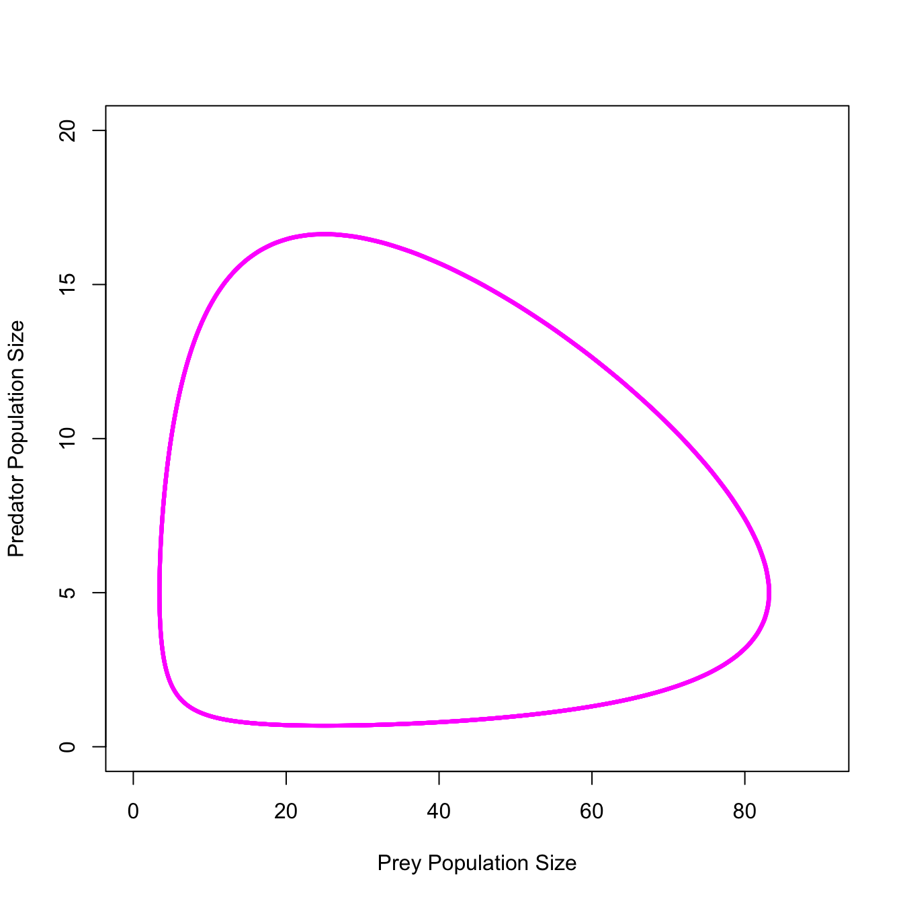
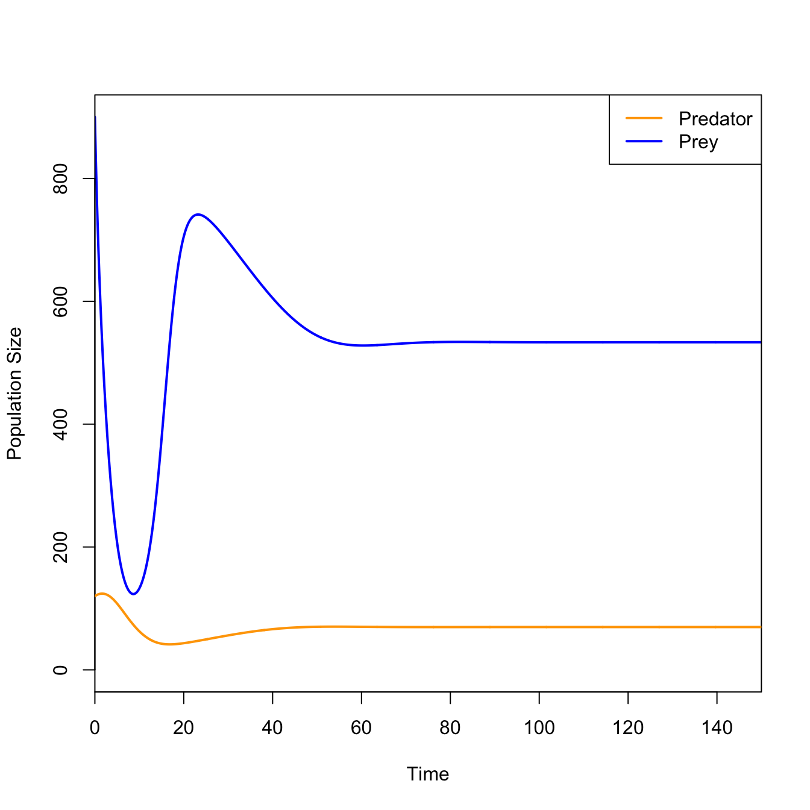

We can also use R to numerically integrate systems of ordinary differential equations (ODEs). These are commonly used in ecology and epidemiology.
We do this using the package deSolve, which has some excellent learning resources to support it (check out the vignettes).
4.1 Lotka-Volterra Model
The Italian biologist Humberto D’Ancona noted that during the first World War, the composition of fish in the markets around the Adriatic Sea changed substantially. During the war, the percentage of predatory fish for sale in the markets of Trieste, Fiume, and Venice increased. D’Ancona had no explanation for this and approached his father-in-law, the eminent mathematician Vito Volterra, with the riddle. Volterra’s solution forms the foundation for nearly all subsequent theory regarding the interaction of species within communities. The great American biologist and demographer, Alfred Lotka, developed the same framework about the same time and the equations have since been known as the Lotka-Volterra model for predatory/prey dynamics.
The classical theory of species interactions is attributable to Alfred Lotka and Vito Volterra involves reducing communities to a single consumer-resource relationship – typically between a primary consumer (i.e., a herbivore) and a secondary consumer (i.e., a carnivore).
The assumptions of Lotka-Volterra model include: - in the absence of a predator, the prey population increases exponentially - in the absence of prey, the predator population decays exponentially - per capita rate of kill a linear function of prey density - each kill contributes equally to predator growth
with(out1, plot(x1, x2, type="l", col="magenta", lwd=3, xlab="Prey Population Size", ylab="Predator Population Size",xlim=c(0,90), ylim=c(0,20)))

4.1.1 Rosenzweig-MacArthur
Rosenzweig and MacArthur (1963) include two elements of ecological realism in their extension of the classic Lotka-Volterra model. First, they include density-dependence of the prey population. The growth of the prey population in the absence of the predator is no longer exponential, but is now a function of current size of the population, with a fixed upper limit to total prey population size. Second, the kill rate of predators is no longer linear. Predators have a functional response to prey abundance. In particular, the number of prey harvested by predators saturates, reflecting the eventual satiation of the predators. Here, I present slightly modified code for the Rosenzsweig-MacArthur model presented in Stevens (2009).
require(deSolve)### Lotka-Volterra with Type II Functional Response# Rosenzweig & MacArthur (1963) modelpredpreyRM <-function(t, y, p) { H <- y[1] P <- y[2]with(as.list(p), { dH <- b*H * (1- alpha*H) - w*P*H/(D+H) dP <- e*w*P*H/(D+H) - s*Preturn(list(c(dH, dP))) }) }b <-0.8e <-0.07s <-0.2w <-5D <-400alpha <-0.001H <-0:(1/alpha)Hiso <-expression(b/w * (D + (1- alpha * D) * H - alpha * H^2))HisoStable <-eval(Hiso)p.RM <-c(b = b, alpha = alpha, e = e, s = s, w = w, D = D)tmax <-150times <-seq(0,tmax,by=0.1)RM1 <-as.data.frame(ode(c(900, 120), times, predpreyRM, p.RM))colnames(RM1) <-c("time","prey","predator")plot(RM1[,"time"], RM1[,"prey"], type="l", lwd=2, col="blue", xaxs="i",xlab="Time", ylab="Population Size",ylim=c(0,900))lines(RM1[,"time"], RM1[,"predator"], col="orange", lwd=2)legend("topright",c("Predator","Prey"), col=c("orange","blue"),lwd=2)

No more cycles!
4.2 SIR Model
We start with a simple Susceptible-Infeced-Recovered (SIR) epidemic. The SIR epidemic is a system of three coupled ODEs.
Simple model for a closed-population (i.e., no births or deaths)
Need to write a function that encodes the system of equations
The function takes three arguments t, x, and parms
these are the time over which the equations are integrated, the state values (i.e., S,I, and R), and the model parameters
The function starts by renaming the elements of the state vector x as things that make the equations easier to read – e.g., I instead of x[2]
The line with(as.list(parms) can take some unpacking
Using with() means setting up a local scope for variables
as.list() coerces our vector of parameters into a list
these two elements allow us to write the equations in a simple and readable way
Note we don’t have to say something like parms["beta"] or parms[3] in order to use that parameter in our equation
require(deSolve)sir <-function(t,x,parms){ S <- x[1] I <- x[2] R <- x[3]with(as.list(parms),{ dS <--beta*S*I dI <- beta*S*I - nu*I dR <- nu*I res <-c(dS,dI,dR)list(res)})}
In order to integrate the equations, use the function lsoda() (which is the solver we use) or ode() (which is a wrapper for different types of solvers including lsoda)
We pass the solver the initial state vector, the times, the name of our function that describes the system of equations, and the vector of parameters
The solver will return the solutions as a matrix; we coerce this using data.frame() to make it easier to work with, plot, etc.
Once we have the data frame, we name the columns to make them easier to refer to
Susceptible, Exposed, Infected, Recovered (SEIR) model
Use parameterization from Ottar Bjornstad (a.k.a., “The Measles Man”)
Open population of constant size (birth rate = death rate (\(\mu\)))
Include vaccinated fraction \(p\)
Model is a damped oscillator
Based on this parameterization, what is the life expectancy of individuals in the population? How long is the latent period? How long are cases infectious?
seir <-function(t,x,parms){ S <- x[1] E <- x[2] I <- x[3] R <- x[4]with(as.list(parms),{ dS <- mu*(N*(1-p)-S) - beta*S*I/N dE <- beta*S*I/N - (mu + sigma)*E dI <- sigma*E-(mu+gamma)*I dR <- gamma*I-mu*R+ mu*N*p res <-c(dS,dE,dI,dR)list(res) })}times <-seq(0, 30, by =1/52)parms <-c(mu =1/75, N =1, p =0, beta =1250, sigma =365/7, gamma =365/7)xstart =c(S =0.06, E =0, I =0.001, R =0)stateMatrix <-as.data.frame(lsoda(xstart, times, seir, parms))##colnames(stateMatrix) <-c("time","S","E", "I","R")plot(stateMatrix[,"time"], stateMatrix[,"I"], type="l", lwd=2, col="blue",xlab="Time", ylab="Fraction Infected")
The Lorenz Attractor is a classic model for dynamical systems and I include it to give you another example of numerically integrating a system of equations in deSolve.
Rosenzweig, M. L., and R. H. MacArthur. 1963. “Graphical Representation and Stability Conditions of Predator-Prey Interactions.”The American Naturalist 97 (895): 209–23. https://doi.org/10.1086/282272.